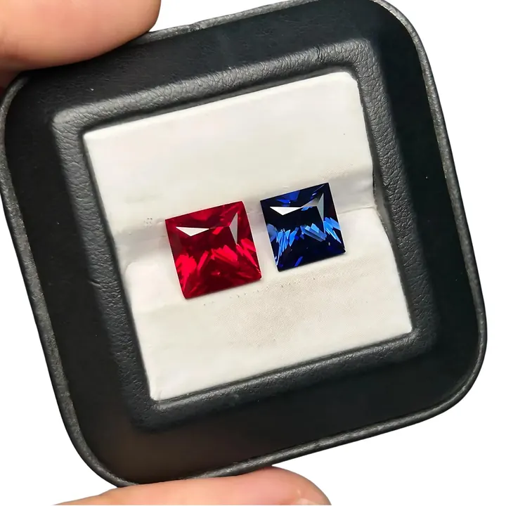
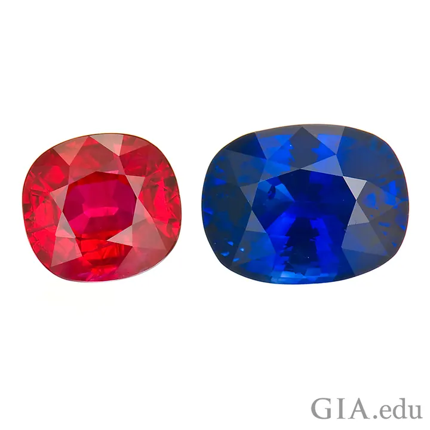

熱處理 vs 無燒：加熱過的紅寶石算天然嗎
熱處理是寶石界的全民整形——九成紅藍寶都進過窯。加熱後的它依然「天然」，但身價從此不同。


核心定義
熱處理（heat treatment）是把寶石放入高溫窯中加熱（紅藍寶常達 1300～1800°C），以改善顏色與淨度的傳統工藝。它源自數百年前的斯里蘭卡與泰國，今日市面流通的紅藍寶石，估計有九成以上都經過熱處理。
關鍵概念：加熱是「優化」，不是「偽造」——它只加速大自然本來會發生的事（地球深處的高溫作用），不改變寶石的化學成分與本質。所以熱處理紅寶石依然是「天然紅寶石」，只是多了「加熱」這個加工註記。但市場上，未經加熱的「無燒」紅寶石因稀有度，價格常是加熱品的數倍。
特徵與分類
| 項目 | 加熱處理 | 無燒（未處理） |
|---|---|---|
| 市場佔比 | 約九成 | 稀有 |
| 顏色 | 可提色、去雜 | 天然色調 |
| 淨度 | 可消除部分內含物 | 保留天然內含物 |
| 價格 | 親民 | 數倍至數十倍 |
| 證書標示 | Heated / 加熱 | No indication of heat（未見加熱證據） |
熱處理還分「低溫加熱」與「高溫加熱」：低溫（約 700°C 以下）主要改善色調；高溫（1300°C 以上）可讓絲狀物溶解、提升透明度，但必須謹慎——操作不當會把寶石燒裂或燒「死」（失去光彩）。
科學原理
加熱改變的是「內含物狀態」與「離子價態」：加熱可讓金紅石針溶解、讓鐵離子價態改變（影響顏色）、讓部分包裹體爆裂重結晶——這些變化都可能留下「加熱證據」：燒結的暈環、斷裂的針狀物、氣液包體變形等。鑑定師就是靠這些顯微特徵判斷「燒沒燒」。
「無燒」不是實驗室保證「沒加過熱」，而是「未見加熱證據」——極少數低溫加熱可能不留痕跡。所以證書寫的是 No indication of heat treatment，用詞精準而謙虛。
鑑定與鑑別方法
- 顯微鏡找加熱特徵：針狀物斷裂、暈環、熔融包裹體
- 看證書處理欄：Heated / No indication of heat
- 低溫加熱痕跡難辨，權威實驗室（GIA/SSEF/Gübelin）才有足夠經驗
- 注意「充填」與加熱的區別：充填是另一種處理
- 高價值寶石務必要求權威證書確認燒與不燒
市場行情與保養建議
行情鐵律：無燒（unheated）是身價的倍增器。同樣等級的緬甸紅寶，無燒單克拉價可能是加熱品的五到十倍；頂級無燒鴿血紅更是拍賣場的常客。買家若預算有限，加熱品是務實選擇——但要清楚自己買的是「優化品」，不是「無燒品」。
近年市場對「無燒」的需求大增，連帶讓「無燒＋權威證書」成為彩色寶石投資的基本門檻。沒有證書的「無燒」，只是賣家的口頭承諾。
常見誤區
不是。加熱紅寶石仍是天然紅寶石，化學成分不變；它只是接受了人類的優化工藝。真正該防的是染色、充填、合成——那些才改變本質。
加熱品的價值低於同等級無燒，但高品質加熱紅寶依然有行情與美感。九成市面寶石都是加熱品——完全排斥加熱，等於排除了大半個寶石市場。
冷知識
斯里蘭卡與泰國工匠的加熱技術源遠流長，現代實驗室只是把溫度與還原環境控制得更精準。「燒寶石」不是現代科技，是古老的手藝。
不同產地、不同內含物的寶石，需要不同的溫度、時長與氧化還原環境——燒過頭會把寶石燒裂或燒白，這是一門需要經驗的科學。
反直覺觀點
地球深處的高溫本來就在「燒」寶石，熱處理只是加速這個地質過程。論本質，加熱紅寶與地底自然的溫度作用同源——只是人類介入了時間表。
證書寫的是「未見加熱證據」，不是「絕對沒燒過」。極低溫加熱可能不留痕跡——市場對「無燒」的信仰，建立在實驗室的檢測能力之上。